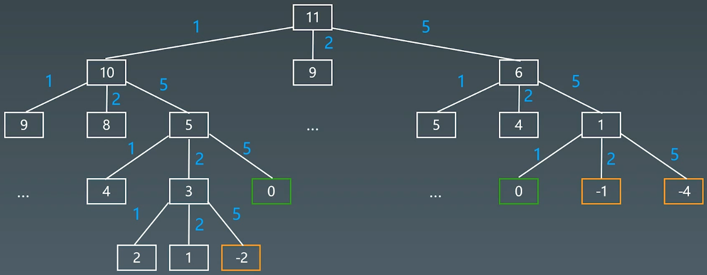
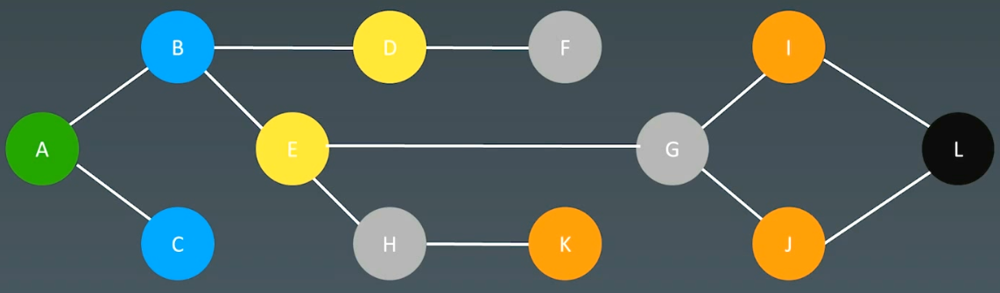
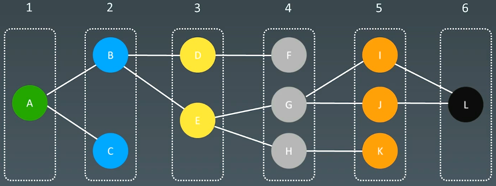
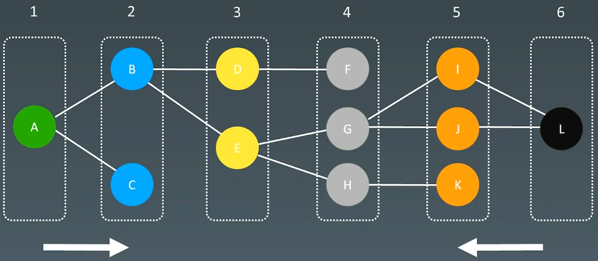

14 高级搜索
1.初级搜索
- 朴素搜索
- 优化方式：不重复（fibonacci）、剪枝（生成括号问题）
- 搜索方向：
- BFS：深度优先搜索 (depth first search)，栈
- BFS：广度优先搜索 (breadth first search)，队列
- 高级搜索：双向搜索、启发式搜索（优先队列）
Coin change（零钱置换）的状态树

DFS代码 - 递归写法
1 | visited = set() |
DFS代码 - 非递归写法
1 | def dfs(self, tree): |
BFS代码
1 | def bfs(graph, start, end): |
2.剪枝
2.1回溯法
回溯法采用试错的思想，它尝试分步的去解决一个问题。在分步解决问题的过程中，当它通过尝试发现现有的分步答案不能得到有效的正确的解答的时候，它将取消上一步甚至是上几步的计算，再通过其它的可能的分步解答再次尝试寻找问题的答案.
回溯法通常用最简单的递归方法来实现，在反复重复上述的步骤后可能出现两种情况
- 找到一个可能存在的正确的答案
- 在尝试了所有可能的分步方法后宣告该问题没有答案
在最坏的情况下，回溯法会导致一次复杂度为指数时间的计算
2.2 实战题目
（1）括号生成
1 | 数字 n 代表生成括号的对数，请你设计一个函数，用于能够生成所有可能的并且 有效的 括号组合。 |
1 | class Solution { |
（2）有效数独
1 | 请你判断一个 9 x 9 的数独是否有效。只需要 根据以下规则 ，验证已经填入的数字是否有效即可。 |
可以使用哈希表记录每一行、每一列和每一个小九宫格中，每个数字出现的次数。只需要遍历数独一次，在遍历的过程中更新哈希表中的计数，并判断是否满足有效的数独的条件即可。
对于数独的第 i 行第 j 列的单元格，其中 $0≤i,j<9$，该单元格所在的行下标和列下标分别为 i 和 j，该单元格所在的小九宫格的行数和列数分别为 $i/3$和 $j/3$，其中 $0 ≤ i/3, j/3 < 3.$
1 | class Solution { |
（3）解数独
1 | 编写一个程序，通过填充空格来解决数独问题。 |
DFS + 回溯
1 | class Solution { |
3.双向BFS
BFS

BFS Levels

Two-ended BFS 双向BFS

4.启发式搜索 Heuristic Search（A *）
本质：通过优先级不断的找
4.1 代码模板
BFS代码：
1 | def bfs(graph, start, end): |
A* search
1 | def AstarSearch(graph, start, end): |
4.2 估价函数
启发式函数 ： h(n)，它用来评价哪些结点最有希望的是一个我们要找的结点，h(n) 会返回一个非负实数,也可以认为是从结点n的目标结点路径的估计成本。
启发式函数是一种告知搜索方向的方法。它提供了一种明智的方法来猜测哪个邻居结点会导向一个目标。
4.3 例题
（1）二进制矩阵中的最短路径
1091. 二进制矩阵中的最短路径 - 力扣（LeetCode）
1 | 给你一个 n x n 的二进制矩阵 grid 中，返回矩阵中最短 畅通路径 的长度。如果不存在这样的路径，返回 -1 。 |
- DP
- BFS
- A*
BFS实现
1 | class Solution: |
A* search
估值函数
1 | h(current_point) = dist(curr_point, desttination_point) |
（2）滑动谜题
1 | 在一个 2 x 3 的板上（board）有 5 块砖瓦，用数字 1~5 来表示, 以及一块空缺用 0 来表示。一次 移动 定义为选择 0 与一个相邻的数字（上下左右）进行交换. |
- DFS
- BFS - 更快找到最优解
- A*
BFS代码
1 | class Solution: |
1 | class Solution { |
A*
1 | class AStar: |
All articles in this blog are licensed under CC BY-NC-SA 4.0 unless stating additionally.
Comment